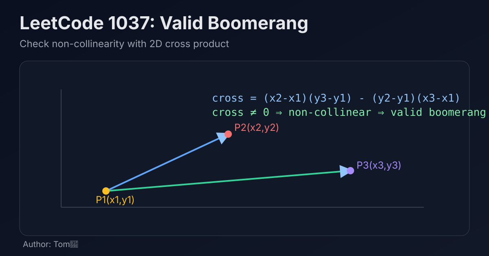

LeetCode 1037: Valid Boomerang (2D Cross Product Non-collinearity)
LeetCode 1037GeometryMathToday we solve LeetCode 1037 - Valid Boomerang.
Source: https://leetcode.com/problems/valid-boomerang/

English
Problem Summary
Given three 2D points, determine whether they form a boomerang. A boomerang means the three points are all distinct and not on the same straight line.
Key Insight
Three points are collinear if and only if the cross product of vectors (p2 - p1) and (p3 - p1) is 0. So we only need one formula check.
Formula
(x2 - x1) * (y3 - y1) - (y2 - y1) * (x3 - x1)
If result is 0 → collinear (invalid). Otherwise → valid boomerang.
Algorithm
- Read three points p1, p2, p3.
- Compute the 2D cross product value.
- Return true iff cross product is not zero.
Complexity Analysis
Time: O(1).
Space: O(1).
Common Pitfalls
- Using floating-point slope comparison may cause precision issues.
- Forgetting that overlapping points also produce cross product 0 and are invalid.
- Swapping coordinates incorrectly in the formula.
Reference Implementations (Java / Go / C++ / Python / JavaScript)
class Solution {
public boolean isBoomerang(int[][] points) {
int x1 = points[0][0], y1 = points[0][1];
int x2 = points[1][0], y2 = points[1][1];
int x3 = points[2][0], y3 = points[2][1];
int cross = (x2 - x1) * (y3 - y1) - (y2 - y1) * (x3 - x1);
return cross != 0;
}
}func isBoomerang(points [][]int) bool {
x1, y1 := points[0][0], points[0][1]
x2, y2 := points[1][0], points[1][1]
x3, y3 := points[2][0], points[2][1]
cross := (x2-x1)*(y3-y1) - (y2-y1)*(x3-x1)
return cross != 0
}class Solution {
public:
bool isBoomerang(vector<vector<int>>& points) {
int x1 = points[0][0], y1 = points[0][1];
int x2 = points[1][0], y2 = points[1][1];
int x3 = points[2][0], y3 = points[2][1];
int cross = (x2 - x1) * (y3 - y1) - (y2 - y1) * (x3 - x1);
return cross != 0;
}
};class Solution:
def isBoomerang(self, points: List[List[int]]) -> bool:
x1, y1 = points[0]
x2, y2 = points[1]
x3, y3 = points[2]
cross = (x2 - x1) * (y3 - y1) - (y2 - y1) * (x3 - x1)
return cross != 0var isBoomerang = function(points) {
const [x1, y1] = points[0];
const [x2, y2] = points[1];
const [x3, y3] = points[2];
const cross = (x2 - x1) * (y3 - y1) - (y2 - y1) * (x3 - x1);
return cross !== 0;
};中文
题目概述
给定平面上的三个点，判断它们是否能构成“回旋镖”。回旋镖要求三个点两两不同，且不能共线。
核心思路
判断三点是否共线，可以直接看向量叉积：(p2 - p1) × (p3 - p1)。叉积为 0 表示共线，否则不共线。
公式
(x2 - x1) * (y3 - y1) - (y2 - y1) * (x3 - x1)
结果为 0：无效；非 0：有效回旋镖。
算法步骤
- 读入三个点 p1, p2, p3。
- 按二维叉积公式计算结果。
- 判断是否不等于 0 并返回。
复杂度分析
时间复杂度：O(1)。
空间复杂度：O(1)。
常见陷阱
- 用斜率做浮点比较，容易引入精度问题。
- 忘了重合点也属于无效情况（叉积会是 0）。
- 叉积公式中坐标顺序写错。
多语言参考实现（Java / Go / C++ / Python / JavaScript）
class Solution {
public boolean isBoomerang(int[][] points) {
int x1 = points[0][0], y1 = points[0][1];
int x2 = points[1][0], y2 = points[1][1];
int x3 = points[2][0], y3 = points[2][1];
int cross = (x2 - x1) * (y3 - y1) - (y2 - y1) * (x3 - x1);
return cross != 0;
}
}func isBoomerang(points [][]int) bool {
x1, y1 := points[0][0], points[0][1]
x2, y2 := points[1][0], points[1][1]
x3, y3 := points[2][0], points[2][1]
cross := (x2-x1)*(y3-y1) - (y2-y1)*(x3-x1)
return cross != 0
}class Solution {
public:
bool isBoomerang(vector<vector<int>>& points) {
int x1 = points[0][0], y1 = points[0][1];
int x2 = points[1][0], y2 = points[1][1];
int x3 = points[2][0], y3 = points[2][1];
int cross = (x2 - x1) * (y3 - y1) - (y2 - y1) * (x3 - x1);
return cross != 0;
}
};class Solution:
def isBoomerang(self, points: List[List[int]]) -> bool:
x1, y1 = points[0]
x2, y2 = points[1]
x3, y3 = points[2]
cross = (x2 - x1) * (y3 - y1) - (y2 - y1) * (x3 - x1)
return cross != 0var isBoomerang = function(points) {
const [x1, y1] = points[0];
const [x2, y2] = points[1];
const [x3, y3] = points[2];
const cross = (x2 - x1) * (y3 - y1) - (y2 - y1) * (x3 - x1);
return cross !== 0;
};
Comments